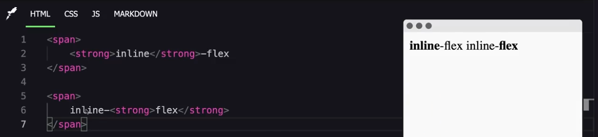

In CSS, the display: inline and display: inline-block properties determine how elements are displayed on the page. The main difference between them lies in how they occupy space and how their contents are handled. Let's explore the characteristics of each:
Display: inline
- Positioning in line: Elements with display: inline are placed in line with other elements, meaning they do not start on a new line. They flow with the surrounding text.
- Dimensions: The width and height of inline elements are automatically determined by the content. It is not possible to manually set the width or height using CSS.
- Margin and Padding: Only the horizontal margins and padding (left and right) affect the spacing around inline elements. Vertical values (top and bottom) are applied but do not affect the visual spacing. 
Display: inline-block
- Positioning in line: Elements with display: inline-block are also laid out in line with other elements, but unlike inline elements, they can have defined dimensions.
- Dimensions: You can explicitly set the width (width) and height (height) of inline-block elements.
- Margin and Padding: Both horizontal and vertical margins and padding affect the spacing around inline-block elements.